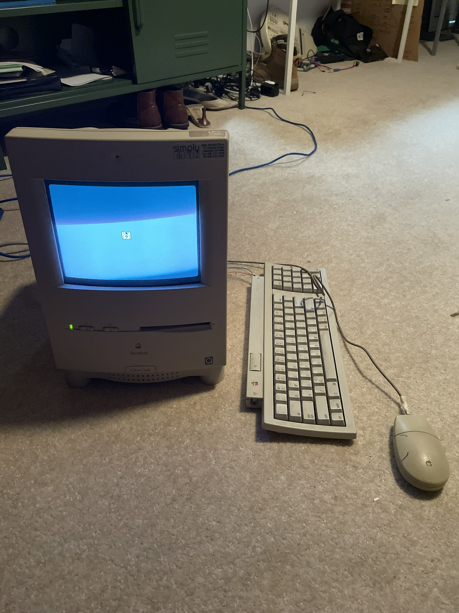
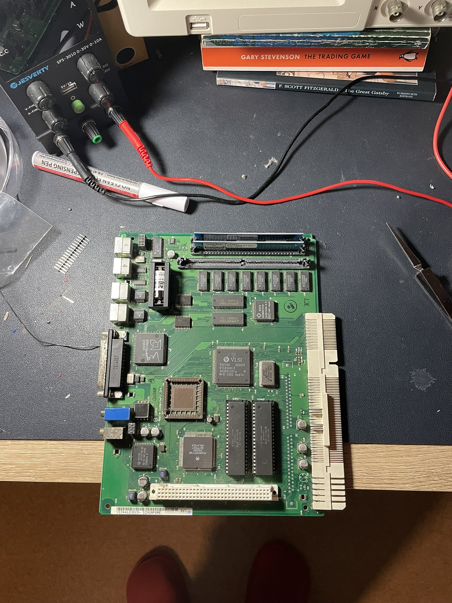
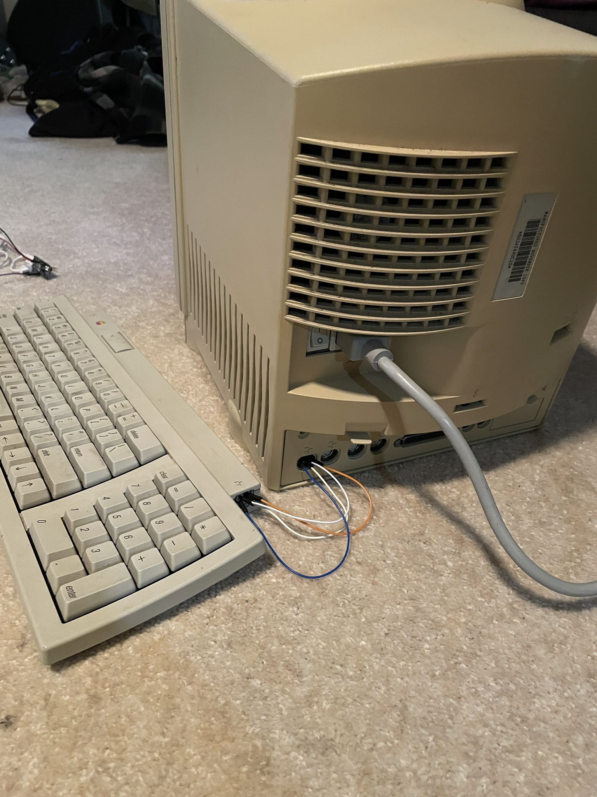
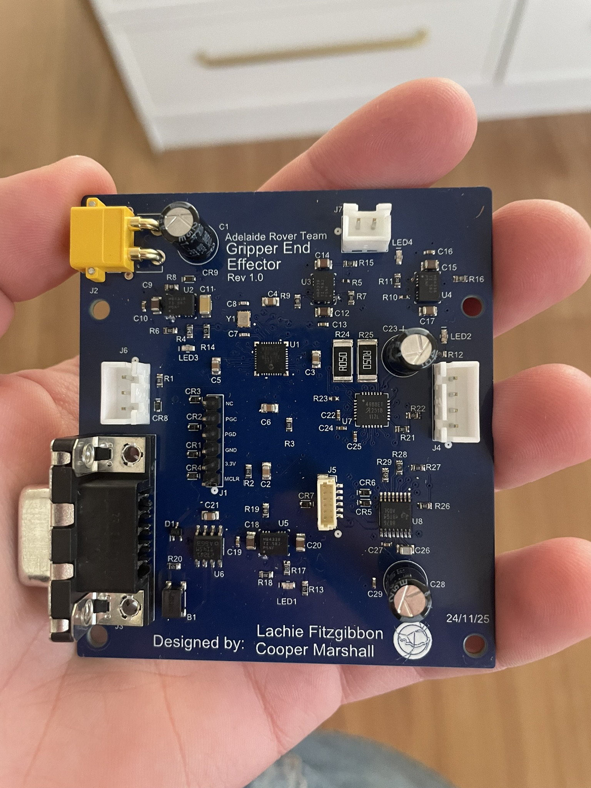
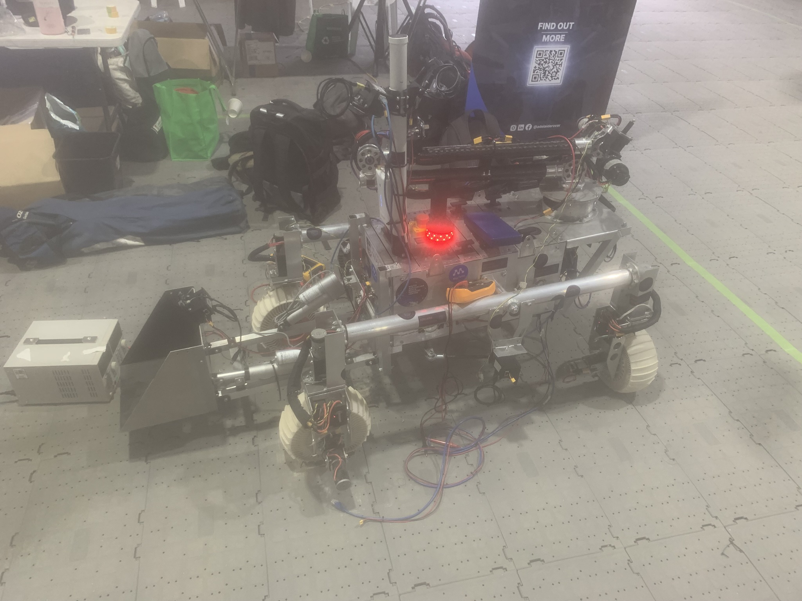

Good at making robots and doing maths, less so at web design.
about me
Currently pursuing concurrent Bachelor of Science (Theoretical Physics) and Bachelor of Mechanical Engineering (Honours) at Adelaide University.
I have always loved understanding why systems are the way they are - and eternal curiosity eventually leads to Physics, a field I find endlessly
fascinating. But the only thing that rivals my love of knowing why something is the way it is, is building something and seeing that evidence first hand.
Mechatronics is such an interesting intersection of these theoretical concepts applied in novel environments. I am always looking to learn something and am
particularly interested in areas of:
Physical Intelligence and Robot Learning Methods
Space Robotics
Quantum Computing
Limits of Formalised Logic
Currently: Technical Director of the [[rover-team|Adelaide University Rover Team]].
2026-2027 · [[rover-team|Adelaide University Rover Team]]
status
Out of prototyping stage, manufacturing underway, big summer push about to start.
Managed 41 technical members and the 3 discipline leads (software, electrical,
mechanical). Responsible for the technical development of every subsystem, including
testing, validation and integration, upskilling new members, and setting up the
team's systems-engineering approach.
Led the design and development of the Water Extraction Payload: custom PCB for motor + heating
control (CAN, STM32) and a 2-axis linear rail system for precise excavation.
Built permanent motor / robotic-arm test benches (Raspberry Pi + Docker,
wall-mounted controllers, safety circuitry) and used them to teach new members.
Assisted in the testing, assembly and PID tuning of 5DOF robotic arm.
Improved the drive and comms of the Mini-Rover.
Set up new ~800 MHz communication systems.
Wrote a custom plugin to export Inventor assemblies to URDF ([[inv2urdf|Inv2Urdf]]).
Developed full-rover CAD models, including payloads (some assemblies 200+ parts).
Improved documentation, methodology and standards.
Co-wrote the CDR and SAR engineering documents.
Big focus of the year: simplifying the system (moving to STM32, using widely supported
hardware and software) to remove barriers to prototyping and development. A strong focus on rapid verifiable prototyping
allowed systems to be developed and integrate earlier than ever before; we're currently three months ahead of our deadlines. Strong working relationship with the workshop was also developed
through weekly meetings, helping facilitate earlier manufacturing deadlines.
Accepted into scholarship, starting work in December!
I was accepted into the Adelaide University Summer Research Scholarship, where I will be working under APrf David Harvey in the
Space Robtics Lab (SPIRAL). The focus of the research will be improving on the locomation and gait control previously developed for
the 2023 honours project Arachnida, which is a semi-autonomous hexapod for cave exploration and mapping. The previous team
utilised the open-SHC heaxpod
gait software from CSIRO, and implemented (among other things) on an energy-based gait controller which switches the gait of the robot
depending on power consumption (which gives information about the difficulty of terrain). I will be (hopefully), spend my first few weeks
gaining familiarity with the system, and performing a small literature review; this will be followed by the Christmas break which I will try and use
to finish setting up a quality simulation. The data of this simulation will then allow me to inform, experimental design to be able to quantify the
effectiveness of different gait patterns/parameters.
Mac turns on, needs an OS installed. Ideating next fun things to do.
ADB-USB keyboard converter works (prototype on an Arduino Micro).
Have had this old Macintosh computer in my cupboard for almost 2 years. Replacement PRAM battery allowed it
to turn back on which allows alot more fun things to be done.



USB-ADB keyboard converter
I have always loved the feel of the classic macintosh keyboard and the only thing stopping me from using it every day is the
stupid ADB (Apple Desktop Bus). Luckily someone very kind has written firmware support for translating keyboard singlas from ADB to USB.
Running this firmware on an Arduino Micro.
A clock with 5 faces whose mechanical hands point to where each of my family members
currently is. Runs on a Raspberry Pi at home with a custom prototype circuit and Python
software built on the PyiCloud library. It's been running non-stop for two months now.
2025-2026 · [[rover-team|Adelaide University Rover Team]]
Retrained from mechanical to electrical. Worked on the robotic arm's end effector across
mechanical, electrical and firmware, and pivoted to a soft-robotics / continuum design:
three tendon-driven fingers with deformable TPU tips for general-purpose grasping.
Designed dynamic 3D assemblies of the gripper.
Prototyped, printed and assembled each iteration (three in total).
Designed the control PCB in Altium: voltage regulation, two motor drivers, CAN,
dsPIC microcontroller. Used at competition.
Wrote the firmware in C, using limit switches and current sensing to detect grip pressure.
Wrote the gripper's ROS node (my first real ROS / C++).

Unfortunately due to the arm not being ready for competition the gripper was not able to be utilised to its full extent.
See the gripper in action:
In the two weeks before competition, I also designed and built the whole electrical
system for the "Mini Rover" payload: Raspberry Pi 4, 4 DC drive motors, servo camera
mount, and the E-stop and warning-light safety circuitry.
2025 · Team lead, team of 5 · 1st place local, 7th international
An omnidirectional robot that collects balls, drives up and down a rotating ramp, and
drops the balls in an end zone. First time designing, building and manufacturing a
whole system from scratch, then getting to redesign it for internationals.
I wrote all of the firmware.
Chassis: MDF → carbon fibre, saving about a kilo
Scoop: rack and pinion → 2-DoF robotic arm
Electronics: protoboard → custom PCB
Perfect score on our first international run.
Also learnt a lot about leadership and tricky team dynamics, and exactly how much can
be achieved at 10pm the night before a deadline.
Differential Suspension for Lunar Rover (Rover, Yr 1)
2024-2025 · [[rover-team|Adelaide University Rover Team]] · mechanical
My first year on the team. Designed an updated differential to keep the chassis
laterally balanced and constrain the motion of each side of the suspension.
CAD in Inventor: 2D drawing standards, constraining multi-part dynamic assemblies.
3D printing and prototyping.
Mechanical assembly and maintenance on the main rover before competition.
Field team member at competition.

log
not a blog
Its alive
Still really dont wanna study for EM exam. Amazon prime is a marvel of modern infrastructure; new battery already arrived. Put it in and
the computer still didn't turn on. Luckily it was pointed out to me by my dad that old Macs wouldnt start unless a keyboard was plugged in,
as if this was a sensible and normal functionality. Anyway, he was right, the Mac 93 has a soft start button on the keyboard that activates
startup. So we have a working Macintosh now! Very good. No OS on it right now so will look into either buying a hardrive emulator and installing
off that or buying 19 floppy disks and loading it manually. Many possible things to do with this in the future, none particularly usefull but all
reasonably fun.
I also grabbed an old Arduino Micro and wired it up to the ADB port, flashed some preexisting firmware
(shoutout zvecr
), wired it up and bang it worked. Great result, kind of embarrising that it took 20 minutes to do something I couldn't do in a week a year ago. On the plus side,
it goes to show how much one can learn in a year. Anyway, next steps is a permanent wiring setup + board housing to allow for realiable and permanent usage.
Getting Retro
Exam season is upon us which means its time to hardcore focus on something interesting and
irrelevent. I pulled out my grandpas old macintosh 93 which has been sitting in my cupboard for a
couple years now. When I last looked at it I tried to turn it on to no avail but I know a lot more things now
so I thought I would try again. It didn't turn on still, however my much more experienced and trained electrical brain
allowed me to notice it made a noise when on. (this is what we call in the buisness; a good sign). Quick look on the forums (shoutout this
goated website: retrotechwiki.com), realised I can just take
out the logic board from the back and have a look.
Its in pretty good condition all things considered, no issues with leaking caps like alot of other people. The PRAM battery was completely dead
tho. Ordered a fresh one and hopefully that solves the problem.
I may also attempt to convert the keyboard to be adaptable with USB. This is something
I tried to do a year or so ago and failed miserably, however I am much more skilled now and also its a reallly nice keyboard.
Did I mention I really don't wanna study.
website updates
Website now has tabs, projects are sorted by what stage they're at, and there's this
log for posting updates. Pages can also link to each other with
[[wikilinks|wikilinks]] cause I love wikipedia and its the best
way to sort information. This is getting dangerously close to a blog (which I oppose), however I
can accept it as long as all the information on here is actually useful for me.
wiki
notes on things i keep coming back to. everything on this site links to everything else with [[wikilinks]].
There are various pre-estabilished methods of communication used in robotics and wider industry. There are different
benefits to each and the software and electrical setup can greatly impact your choice.
Motors are mechanisms capable of producing a mechanical torque controlled by an electrical signal. This is traditionally done
by leveraging the electromagnetic effect of a moving current inducing a magnetic field and generating a torque. Note: this effect
is the inverse of a generator or dynamo.
Web server is the software program that automates the requests and sharing of webpages via HTTP with a web client (i.e browser, etc).
Have been looking into creating one of these for this website so I can host it at home and am not beholden to any 3rd party silo (i.e github atm).
The things drawing themselves down the sides of this website are called cellular automata (unless you are in boring mode).
All they are is a binary coloured cell that is defined by a simple pattern relating it to the colour of
the cells above it. These rules have been numbered from 0-255 and some produce continouosly evolving patterns. Whilst many people
smarter then me agree on it, I really struggle to believe that systems with rules as simple as these can be computationally irreducible.
Working out how to solve/predict them seems to be at the very limits of what is considered to be a solvable problem yet so has every great advancement.
See: p=np problem, turing machines (rule 110 is turing complete fun fact), goedels incompleteness theorem, conways game of life.
Wikilinks system is currently being trialed on this website. Wikipedia is without a doubt the best thing to come out of the invention
of the world wide web.